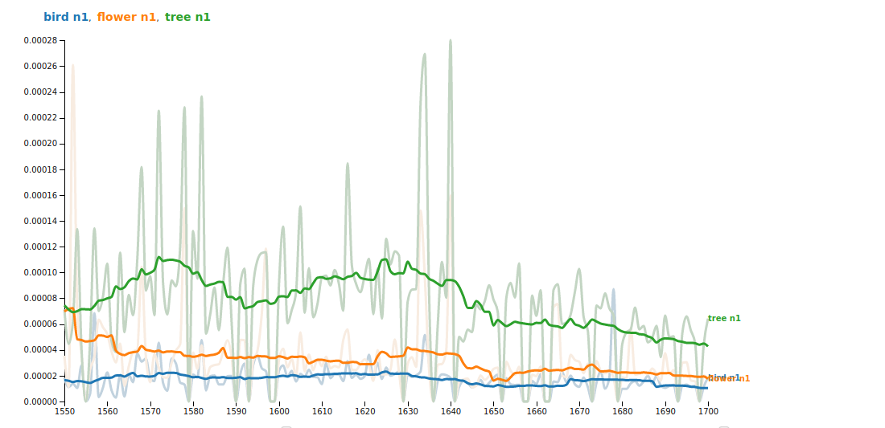

EarlyPrint + Python¶

This Jupyter Book contains a series of Python coding tutorials for working with the EarlyPrint XML corpus. These are meant to be friendly first steps toward computational study of our corpus, and we encourage you to reach out with any thoughts or questions.
On the left-hand side of this page are several Python “notebooks.” They’re ordered roughly by complexity of the code they contain, but one is not necessarily a prerequisite for the next. To make a notebook interactive—in order to modify code and make other changes—use the rocket ship logo at the top of any notebook page and select “Binder.”
Happy coding!